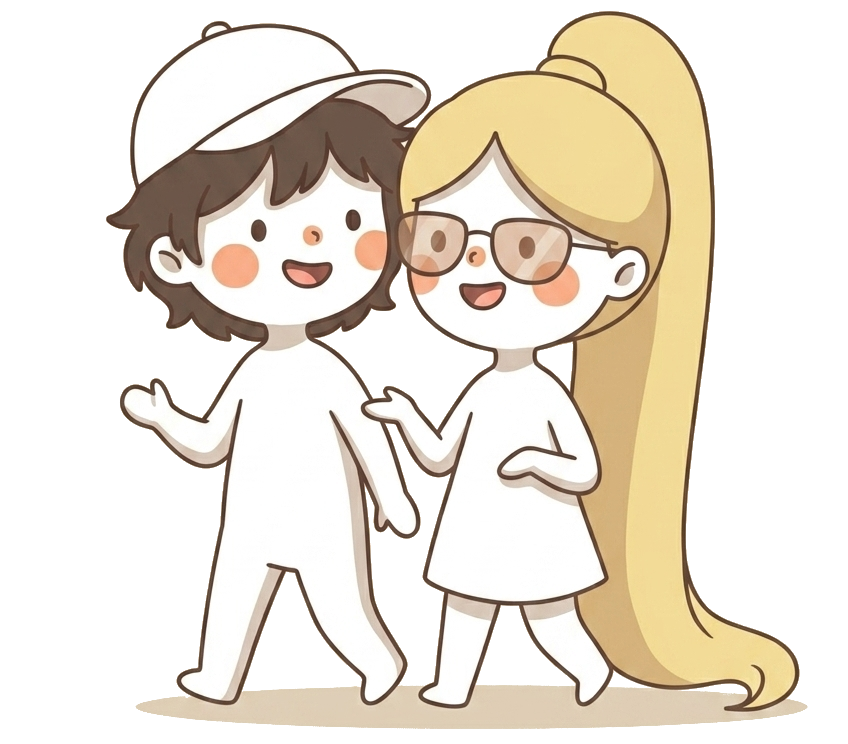

An immersive, narrative, progressive approach — so that Québécois French becomes a language you truly understand, not just a list of rules to recite.
Lessons can be taught in any of these languages. More teaching languages will be added as they're mastered.